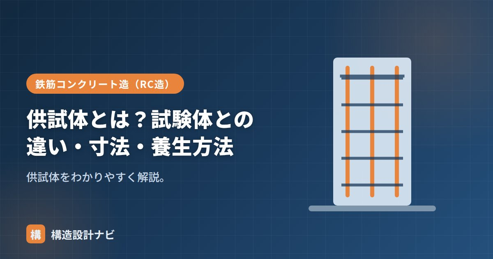

供試体とは？試験体との違い・寸法・養生方法

供試体（きょうしたい、英語：specimen／test specimen）とは、材料の性能を調べる試験のために、規定の方法で成形・養生した試料のことです。コンクリートでは、圧縮強度試験用の円柱形のテストピースが代表例で、現場から採取した生コンクリートを型枠（モールド）に詰めて作ります。設計図書どおりの強度が実際に出ているかを確認する、品質管理の要となる存在です。
- 供試体は試験用に規定どおり作った試料。コンクリートでは円柱のテストピースが代表。
- 「試験体」は実物大の部材実験などを含む、より広い意味で使われることが多い。
- 寸法・養生方法を誤ると正確な強度が得られないため、規格に沿った管理が欠かせない。
意味
材料の性能（強度など）を調べるために、規定どおりに成形・養生した試料が供試体です。コンクリートの圧縮強度・引張・曲げなどの試験に使います。「試料（サンプル）」という言葉が示すとおり、供試体は母集団（実際に打ち込まれたコンクリート全体）の性質を代表するものでなければなりません。そのため、採取から成形・養生・試験までの手順が細かく規定されており、現場ごとに勝手な方法で作ることは認められていません。
試験体との違い
| 供試体 | 試験体 | |
|---|---|---|
| 意味 | 試験用に成形した小さな試料 | 試験の対象となるもの（広義） |
| 例 | φ100×200の円柱 | 実物大の柱・梁・接合部など |
| 目的 | 材料そのものの性能確認 | 部材・接合部の構造性能の確認 |
厳密な使い分けは場面によりますが、一般に供試体は材料試験の小さな試料、試験体は部材実験などの対象を指すことが多い言葉です。論文や実験報告では「試験体」を供試体の意味で使うこともあり、文脈で判断する必要があります。
寸法
コンクリート圧縮強度用の供試体は円柱形（直径：高さ＝1：2）で、φ100×200mmが一般的です（粗骨材が大きい場合はφ150×300など）。直径を高さの半分にするのは、圧縮試験のときに端部の摩擦の影響が中央部の応力状態に及びにくくするためで、細長すぎると座屈的な破壊、太く短すぎると端部拘束の影響が強くなり、正確な圧縮強度が得られにくくなります。試験に使う供試体の直径は、コンクリートに含まれる粗骨材の最大寸法の3倍以上とすることが原則です。
養生方法
目的に応じて標準（水中）養生・現場水中養生・封かん養生を使い分けます。配合の判定には標準養生、構造体強度の推定には現場水中養生・封かん養生などが用いられます。標準養生は温度をほぼ一定に保った水中で行うのに対し、現場水中養生・封かん養生は実際の構造体に近い温度履歴を受けるため、一般に標準養生より強度が低めに出る傾向があります。目的が違う養生方法の結果を単純に比較しないことが大切です。
供試体の採取・成形・養生の方法が規定と異なると、正しい強度が得られず、合否判定を誤るおそれがあります。突き固め不足による空隙、養生温度の管理不足、脱型時期のばらつきなどはよくある失敗例です。試験結果を評価する際は、どの養生方法で作られた供試体かも必ず確認しましょう。
Q1. 供試体はいくつ作ればよいですか？
コンクリートの品質管理では、打込み日ごと・打込み区画ごとなど、一定の単位で複数本（一般に3本1組など）を採取するのが基本です。1本だけでは、ばらつきの影響を強く受けてしまうため、複数本の平均で強度を評価します。
Q2. 供試体とコアの違いは？
供試体はフレッシュな状態のコンクリートから型枠で成形しますが、硬化後の構造体から円柱状に切り出す試料は「コア（コア供試体）」と呼ばれ、区別されます。コアは実際に打ち込まれた構造体そのものの強度を確認したいときに用いられます。
「テストピース」「供試体型枠（モールド）」「標準水中養生」をどうぞ。
受入検査で供試体を作る場面に立ち会うと、突き固めが甘いまま型枠に詰めてしまう場面にまれに出くわします。強度不足の原因を後から供試体側の作り方に求められないよう、成形・養生の様子までその場で見届けるようにしています。
養生方法の使い分け（図解）
同じ供試体でも、どう養生するかで測っている意味がまったく変わります。ここが実務で混同されやすい点です。
供試体の寸法と本数
| 項目 | 規定・目安 | 理由 |
|---|---|---|
| 形状 | 円柱（直径：高さ＝1：2） | 端面の摩擦拘束の影響を抑え、安定した破壊性状を得るため |
| 直径 | 粗骨材最大寸法の3倍以上 | 骨材の大きさが結果に影響しないようにするため |
| 代表寸法 | φ100×200mm（最も一般的） | 粗骨材最大25mmまで対応でき、扱いやすい |
| 1回の試験 | 3本の平均 | ばらつきを吸収し、偶発的な異常値の影響を減らす |
| 採取頻度 | 打込み日・工区ごと、150m³に1回など | ロットを代表するサンプルを確保するため |
供試体の役割は、実際に打ち込まれたコンクリート全体の性質を代表することです。そのため、採取する場所・タイミングが重要になります。荷卸し地点で、1台の生コン車の中でも均質な部分から採取するといった手順がJISで定められています。手順を外れた採り方をすると、いくら丁寧に養生・試験をしても、結果は実際の躯体の品質を表しません。
よくある質問
Q1. 供試体と試験体はどう使い分けますか？
一般に、供試体は材料試験のための小さな試料、試験体は構造実験の対象となる部材そのものを指します。コンクリートの圧縮強度用の円柱は供試体、柱・梁・接合部の実大実験に用いるものは試験体と呼ぶのが通例です。ただし論文や報告書では「試験体」を供試体の意味で使うこともあり、文脈で判断する必要があります。
Q2. なぜ円柱の高さは直径の2倍なのですか？
端面の拘束による影響を避けるためです。圧縮試験では、供試体の上下端が載荷板との摩擦で横方向に広がるのを妨げられ、その部分だけ見かけの強度が高くなります。高さが直径の2倍あれば、中央部にこの拘束の影響が及ばない領域が確保され、材料本来の強度が測定できます。高さが不足すると強度が高めに出てしまいます。
Q3. 供試体の強度が不足していた場合はどうなりますか？
まず判定基準を確認します。受入れ検査では、3回の試験の平均が呼び強度以上、かつ1回の値が呼び強度の85%以上であることが求められます。これを満たさない場合、構造体からのコア採取による強度確認、非破壊試験による推定、構造安全性の再検討といった手順に進みます。結果によっては補強や打ち直しが必要になるため、日々の品質管理が重要です。
まとめ
- 供試体は試験のために規定どおり作る試料。コンクリートでは円柱のテストピース。
- 試験体は実物大の部材など、より広い試験対象を指すことが多い。
- 寸法はφ100×200mmが一般的で、直径は粗骨材最大寸法の3倍以上とする。
- 目的（配合判定か構造体強度推定か）によって養生方法を正しく使い分ける。